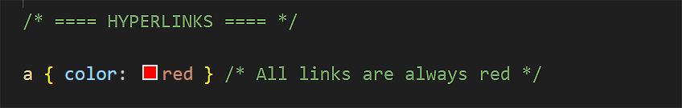
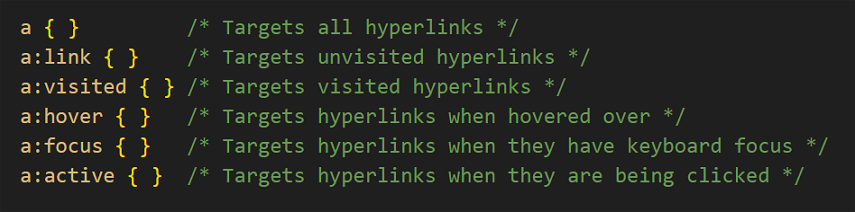
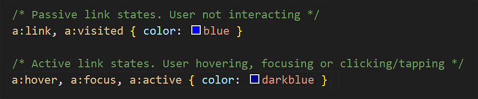
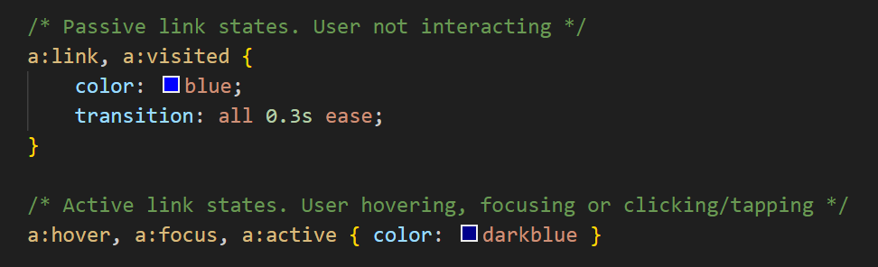
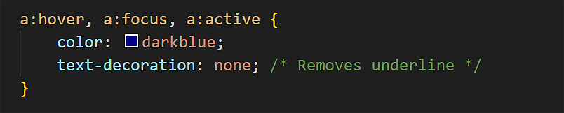
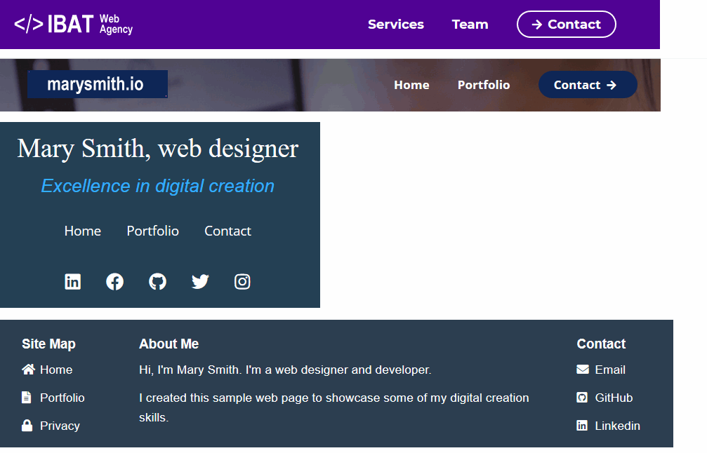
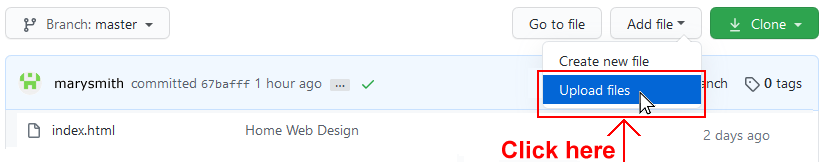
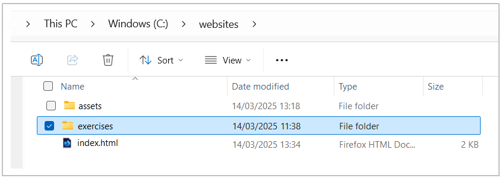
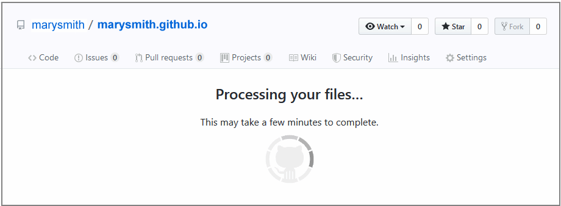

Learning Goals
At the end of this Tutorial, you will be able to:
- Understand the different states of hyperlinks
- Know how to target specific hyperlink states using CSS pseudo-classes
- Change the colour and underline properties of hyperlinks
Styling hyperlinks with CSS
The simplest way to style a hyperlink in a web page is to add a style rule for color in the linked stylesheet file as follows.
However, unlike other inline elements such as <b> or <i>, hyperlinks are interactive elements. Users expect links to display differently depending on their interaction with them.
Hyperlinks have five dynamic states. In CSS, you can target these different states using pseudo-classes. See below.
Note the colon character : between the a selector and the pseudo-class name, such as link and active.
For simplicity, these five states can be grouped into two categories: passive and interactive.
In the example above, the link colour changes from blue to dark blue when the user interacts with it.
Typically, you will add smooth transition effect between states to create a more polished experience. See below.
Updating your van Gogh and Tourism hyperlinks
Now you will update the hyperlinks in two of your sample exercise files. Follow these steps:
- In VS Code, open the style-4.css stylesheet.
- Add the following at the end of the file.
/* ======== HYPERLINKS ======== */ a:link, a:visited { color: #000; transition: all 0.3s ease; } a:hover, a:focus, a:active { color: var(--yellow-700) } - Save the stylesheet and, in your browser, note the effect on your web page.
- In VS Code, open the style-5.css stylesheet.
- Add the following at the end of the file.
/* ======== HYPERLINKS ======== */ a:link, a:visited { color: var(--green-800); transition: all 0.3s ease; } a:hover, a:focus, a:active { color: var(--green-600) } - Save the stylesheet and, in your browser, note the effect on your web page.
✅ Done.
Underlines and the text-decoration property
Changing their colour according to state is the most basic way to style hyperlinks to provide clear visual feedback to users.
Another option is to change the underline properties.
By default, browsers display hyperlinks with an underline. This helps users identify clickable text, especially when links are embedded within paragraphs.
You can control the presence of underlines using the text-decoration property. For example, to remove the underline from active hyperlink states, you would do the following:
Typically, you would remove underlines from hyperlinks in navigation menus and footers.
Three commonly used text-decoration-related properties for hyperlinks are the following:
- text-decoration-color: Sets the colour of the line (can be different from the text colour)
- text-decoration-thickness: Sets the thickness of the line
- text-underline-offset: Sets the distance between the text and the underline
Let's apply these to your two sample web pages.
- In VS Code, for style-4.css, update your hyperlink style rules as follows.
a:link, a:visited { color: #000; transition: all 0.3s ease; text-decoration-thickness: 2px; text-decoration-color: #000; text-underline-offset: 7px; } a:hover, a:focus, a:active { color: var(--yellow-700); text-decoration-thickness: 2px; text-decoration-color: var(--blue-600); text-underline-offset: 7px; } - In VS Code, for style-5.css, update your hyperlink style rules as follows.
/* ======== HYPERLINKS ======== */ a:link, a:visited { color: var(--green-800); transition: all 0.3s ease; text-decoration-thickness: 2px; text-decoration-color: var(--green-800); text-underline-offset: 6px; } a:hover, a:focus, a:active { color: var(--rose-600); text-decoration-thickness: 2px; text-decoration-color: var(--rose-600); text-underline-offset: 6px; } - Save both stylesheets and view the effect on your web pages.
✅ All done.
Uploading your files to GitHub
You are now ready to upload your work to your account on GitHub.
- Open a new tab in your web browser and go to github.com. If you are not already signed in to your GitHub account, sign in now.

- On your GitHub home page, click the ‘repo’ that holds your web pages. Its name will look as follows, where username is your chosen username on GitHub.
username.github.io

- On the next GitHub screen displayed, near the right of the screen, you can see a button named Add file. Click on it.

- From the dropdown list displayed, choose the option Upload files. 
- In File Explorer (Windows) or Finder (Apple Mac), drag-and-drop your 📁 exercises sub-folder to upload it io your repository on GitHub. 
- Scroll down to the bottom of the GitHub screen, and accept or edit the short message (Add files via upload) in the Commit changes box.
- Finally, click the green Commit changes button to upload your files. 
Your updated web pages are now published on GitHub at web addresses similar to the following:
https://username.github.io/exercises/page-4.html
https://username.github.io/exercises/page-5.html
It may take a few minutes for your uploaded files to appear on GitHub.